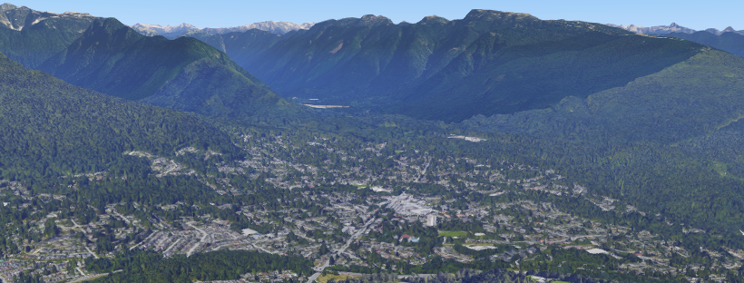
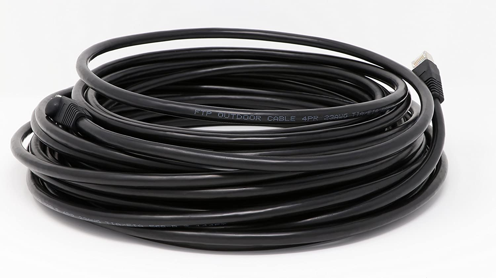

Lynn LAN is a neighbourhood network operated by Adam Soltys that anyone can join to receive discount high-speed Internet service.
$20 CAD/month + monthly data charges
Data rate: $0.10/GB unlimited upload/download
80-500 Mbps depending on equipment and link distance
I have a 1 gigabit per second Telus Pure Fibre business connection that I'm willing to share with any household that wants to connect to me.
We can connect either by running a direct cable if you're on an adjacent property, or by using an outdoor WiFi antenna to establish a wireless link so long as there's a direct line of sight.
As more households join the network, you may be able to connect to them as well if they're willing to act as a relay by forwarding my connection or as a gateway by sharing their own high speed connection.
The antenna or cable connecting to your neighbour plugs into a router in your home. The router creates a hotspot access point that your devices can connect to over WiFi or ethernet.
The service can work alongside your existing service as a completely separate hotspot so you can keep your current plan and try things out with no strings attached.
Open source software from Althea runs on the routers and takes care of splitting the connection efficiently, keeping track of how much bandwidth is being used, managing billing, and securing the network through encrypted VPN tunnels.
I have a 1000ft spool of cable so I can provide this and cut it to length for people as needed.
Each month, my router will produce a report of how much bandwidth was consumed by all the routers connected to it. I'll send out an email invoice to each subscriber with a report of their bandwidth usage, asking for payment of $20 plus $0.10/GB for every GB of bandwidth used. The average Canadian household uses 100GB of data in a month. You can check with your provider to find out your monthly usage. Payment can be sent by:
Yes, the wireless antennas transmit over the unlicensed WiFi spectrum at either 5Ghz or 60Ghz at power levels well within local regulatory limits. I've confirmed with Telus in writing that I won't be violating their terms of service by sharing or re-selling my connection because I'm paying for a business account.
Is this cool?Yes, extremely cool. By participating, you'll be building a resilient communications network that can have multiple redundant paths to the Internet and continue to operate in emergency situations. Households on the network can continue to host services, share files, and communicate with each other even if the wider Internet were to become unavailable. There's a potential to connect up with similar networks in other neighbourhoods, forming a kind of meshnet.
What about privacy/security? Can my neighbours snoop on my data or see what sites I'm visiting?No, all the connections are routed through an unlogged VPN server before being sent on to the Internet. For a few dollars per month you can use an additional 3rd party VPN like Nord or PIA. I'd be happy to help anyone who wants to know more.
Can I hook up my neighbours?Yes, if you want to act as a relay in the network you can set up a link between more than one neighbour or sell the connection to your neighbours. The software included on your router will keep track of how much bandwidth they use and you can charge them whatever you like for it. I might offer a discounted data rate to households that relay my connection.
Is the service going to be stable and reliable? Can I call you in the middle of the night if things go wrong?I'll do my best to make sure the network is always online but to be honest I've never done anything quite like this before and until I get a few people online and trying it out I can't say with confidence that there won't be a few growing pains and hiccups. This isn't a full-time business venture for me but more of a hobby project that might turn into a side gig that might turn into a business one day if things go well. I can't make any guarantees about uptime or my own personal availability at this point so if losing Internet for a few hours due to unexpected outages is going to be a deal-breaker for you, I'd suggest staying with your current provider for a while until the network gets built out a bit more and there are more households than just mine acting as gateways to the Internet.
What else is cool about decentralized community meshnets?The equipment for making connections is owned and operated by the people in the neighbourhood who are using the network rather than a big corporation so they can switch providers or upgrade their service really easily. For instance, if I were to start price gouging or overselling my connection, anyone on the network could offer to be a gateway node and get their own resellable connection from Telus or another provider that they could offer to everyone on the network for a cheaper rate. The software on everyone's routers will automatically find and use the cheapest/fastest route to the Internet if there are multiple options.
How many people can join?I think my current 1Gbps connection should be capable of comfortably servicing about 40 households but at this point I'd be happy to start slow and experiment with just a few brave customers for a while.
Can I get out of my current contract or bundle and switch to this instead?Yes, your provider may charge a cancellation fee, something like $10/month for each month remaining on your contract. You'll probably save more than that by switching though.
How do I get started?Send an email to asoltys@gmail.com
Where can I learn more?There are a lot of great resources at althea.net